An experimental patchable drone synthesizer with
three main components, a clock divider, sine wave oscillator,
and wave multiplier oscillator. While at times the device emits sounds
that could be perceived as pleasant, it predominantly emits harsh
rhythmic tones.
The wave multiplier oscillator uses a method similar to phase distortion synthesis. However, further testing has shown it to be highly unstable.

. [ stored data ] . . [ architecture ] .